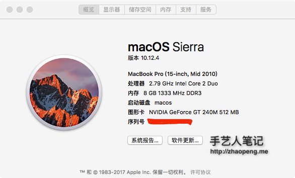
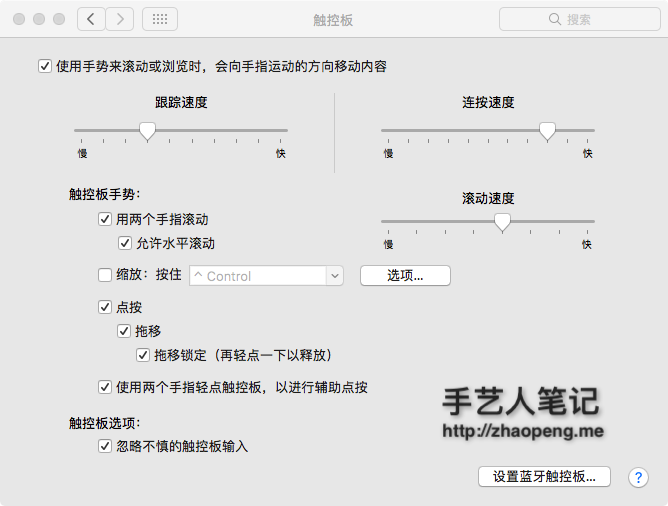
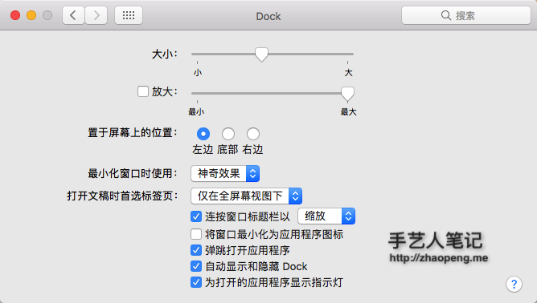
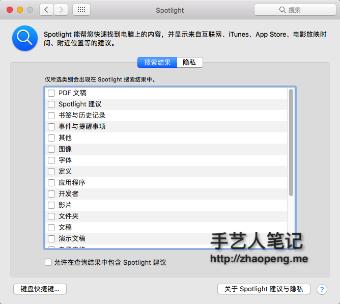
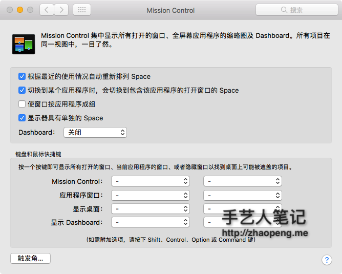
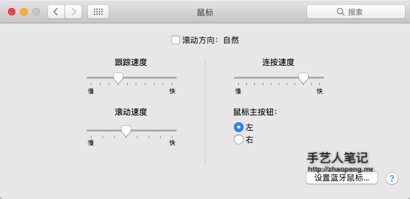

系统设置
在任何的操作系统中，首先你需要做一件事就是更新系统，点击窗口左上角的 > 关于本机 > 软件更新 。此外，如果这是一部新的电脑，你还需要到系统设置进行一些适当调整。如何调整，取决于个人喜好。

触控板
- 系统设置 > 触控板
- 光标与点击
- ✓ 轻拍来点按
- ✓ 辅助点按
- ✓ 查找
- ✓ 三指拖移
- 滚动缩放
- ✓ 默认全选
- 更多手势
- ✓ 默认全选
- 光标与点击

Dock
- 置于屏幕上的位置：左边
- 设置 Dock 图标更小（大小随个人喜好）
- ✓ 自动显示和隐藏 Dock

Finder
- Finder > 显示
- 显示标签页栏
- 显示路径栏
- 显示状态栏
- 自定工具栏 > 去除所有按钮，仅剩搜索栏
- Finder > 偏好设置
- 通用
- 开启新 Finder 窗口时打开：HOME「用户名」目录
- 边栏
- 添加 HOME「用户名」目录 和 创建代码文件目录
- 将 共享的(shared) 和 标记(tags) 目录去掉
- 通用
菜单栏
- 去掉蓝牙等无需经常使用的图标
- 将电池显示设置为百分比
Spotlight
我去除了所有,看个人的喜好,我使用 alrt ,请查看 alrt 的使用.
- 去掉字体和书签与历史记录等不需要的内容

Mission Control
通过屏幕四个角快速操作
- 系统设置 > Mission Control > 触发角
- 右上角
- Launchpad
- 右下角
- 桌面
- 左上角
- Mission Control
- 左下角
- 应用程序窗口
- 右上角

设置快捷键
- 系统设置 > 键盘 > 快捷键
- Launchpad 与 Dock
- × 打开或关闭 Dock 隐藏
- Mission Control
- × 全部去除
- 输入法
- ✓ 选择上一个输入法
- 屏幕快照
- × 全部去除
- Spotlight
- × 全部去除
- Launchpad 与 Dock
允许任何来源的应用
在 10.12.4 以后,需要执行 sudo spctl --master-disable才可以打开任何来源.
- 系统设置 > 安全性和隐私 > 通用
鼠标
由于 mac 默认和 windows 的鼠标滚动不一致,调整和 windows 保持一致.
- 系统设置 > 鼠标
- × 滚动方向:自然 
互联网帐户
- 添加 iCloud 用户，同步日历，联系人和 Find my mac 等等